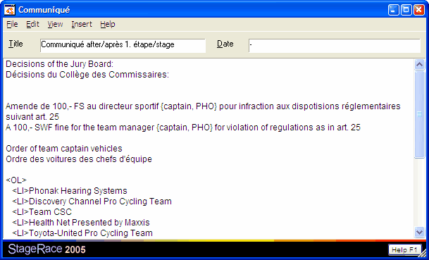
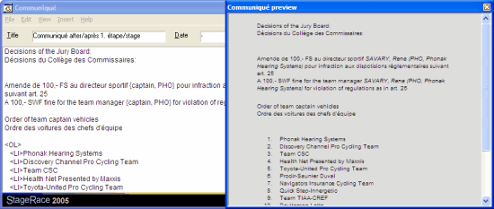

|
|
|
|
|
Communiqué DialogWhenever an event, stage or half stage is selected in the event tree, a communiqué can be added through in the menu. An existing communiqué can be edited through in the menu. It can be deleted through in the menu. For these two functions the subjected communiqué must be selected in the event tree.

EditingIn the dialog the title, date and contents of the communiqué can be entered. The title field can be used to give the communiqué a natural title. It is not necessary to include identification numbers here, since StageRace gives communiqués the number of the (half) stage or the indication "general" for communiqués for respectively (half) stages and the entire event. Also StageRace's system of communiqué numbering can be used on communiqués. HTMLThe text you enter in the contents field will be converted to HTML when a publication is generated for the communiqué. Therefore, if you want layout of the text in addition to plain format that you type it in, you can use HTML tags to do so. For instance:
You can find countless sources such as on the internet that more thoroughly discuss HTML and its tags, the most simple styles are available through the menu. PreviewThe communiqué that is prepared in the dialog can be previewed instantly. Through in the menu you get an additional window that shows the communiqué's contents in the right make-up.

Team Captain Vehicles OrderThis function is only available for half stage communiqués. Through in the menu a proposal order of team captain vehicles for the next stage can be inserted at the current cursor position, based on either the current stage arrival or the current general classification. The order list will be inserted at the current cursor position in the contents field of the dialog.
This vehicles order is just a proposal that you can change easily, if the practical circumstances require this. Insert Dynamic TagsA number of tags is available that will be automatically replaced when the communiqué is being generated.
|
||||||||||||||||||||||||||||||||||